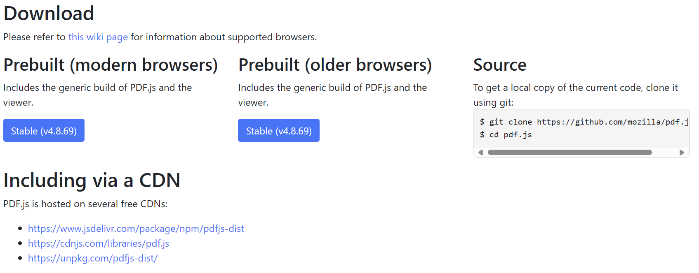
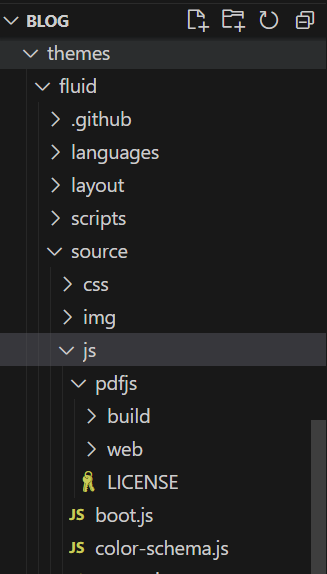

如何在HEXO中插入PDF
笔者在近日攥写个人博客的时候发现了这样一个问题：如果想要在博客内嵌入PDF供读者预览和下载，该如何去做呢？
笔者针对这一问题查询了相关资料，并成功在博客中插入了可以阅览、下载的PDF（如该博客所示），以下是经验总结。
网站环境
笔者搭建博客使用了HEXO和HEXO的Fluid主题，但是该方法利用的是外部JS，因此在各种框架、环境中都可用。
文件准备
本文的方法使用了Mozilla的PDF.JS库，您可以去官网链接下载，也可以根据官方说明文档在运行下列命令后自己构建。
1 | |
本文直接使用从官网下载的文件。
实现步骤
1.下载PDF.js文件
进入官网后，点击DOWNLOAD，会进入如下图所示的页面，官方提供了两种可选的下载，分别针对modern browsers和针对older browsers。二者的不同之处在于，针对older browsers的版本兼容了更老的IE浏览器，如果要考虑使用老版本浏览器的访问者，可以选择下载针对older browser的版本。

笔者在这里选择的是针对modern browsers的版本。
这里不推荐用CDN方式的缘故是国内访问官方提供的CDN速度慢且不稳定。
2.导入博客项目
点击下载后，我们会得到以pdfjs-[版本号]-dist.zip命名的压缩包，这里笔者推荐将压缩包更名为pdfjs，以便于方便记忆和管理。
更名完毕后，将压缩包解压至部署在本地的博客项目的文件夹中。对于基于HEXO搭建的博客项目，笔者建议解压到source文件夹或者themes的source文件夹（如有）中。
笔者选择了解压到themes/fluid/source/js文件夹中。
此时可以看到如下图所示的文件及文件夹。

按官方文档所述，pdfjs文件夹中的结构如下所示：
├── build/
│ ├── pdf.mjs - display layer
│ ├── pdf.mjs.map - display layer’s source map
│ ├── pdf.worker.mjs - core layer
│ └── pdf.worker.mjs.map - core layer’s source map
├── web/
│ ├── cmaps/ - character maps (required by > core)
│ ├── compressed.tracemonkey-pldi-09.pdf - PDF file for testing > purposes
│ ├── images/ - images for the viewer and > annotation icons
│ ├── locale/ - translation files
│ ├── viewer.css - viewer style sheet
│ ├── viewer.html - viewer layout
│ ├── viewer.mjs - viewer layer
│ └── viewer.mjs.map - viewer layer’s source map
└── LICENSE
我们要利用的就是web文件夹中的viewer.html文件，同时我们可以删除web文件夹中的compressed.tracemonkey-pldi-09.pdf以减小空间占用。
至此，我们完成了将PDF.js导入项目。
3.在项目中使用PDF.js
在完成导入PDF.js后，使用如下代码，我们便可以在我们博客的任何页面提供PDF的展示和预览。
1 | |
根据pdfjs所在的路径以及用于演示的pdf的路径，笔者在最开始的demo页面中使用了如下代码：
1 | |
其他
在博客内可以导入并展示PDF后，可以通过更改viewer.css文件修改预览PDF的容器的配色主题。